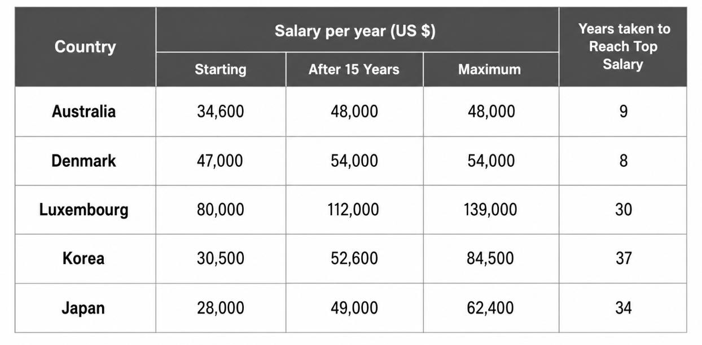

Great! Your results are ready
Your teacher has finished reviewing your mock exam. You can now see your scores, band estimates, and detailed feedback.
Mock Exam Submitted
You have already completed and submitted your mock exam. Your teacher is reviewing your results and will provide feedback on your writing shortly.
← Back to the boardIELTS Academic
Full Practice Test
This is a timed, full-length IELTS Academic practice exam. Every section runs on its own clock and moves on automatically — there's nothing to click to advance. Your results will be automatically sent to your teacher.
Next section starting…
Take a breath — the next section will begin automatically.
Writing Task 1 — Academic Report
Suggested time: about 20 minutes.
The table below gives information on the salaries of secondary teachers in five countries in 2009.
Summarise the information by selecting and reporting the main features, and make comparisons where relevant.
Write at least 150 words.

Your Task 1 response
Writing Task 2 — Essay
Suggested time: about 40 minutes.
In many parts of the world, people throw away broken items instead of repairing them, while others believe these items should be repaired and reused. What are the reasons for this trend? What solutions can you suggest?
Write at least 250 words. Give reasons for your answer and include any relevant examples from your own knowledge or experience.
Your Task 2 response
Both tasks are on one continuous 60-minute clock — move between them however you like. The section ends automatically when the time is up.
Well done!
You have completed the IELTS mock exam. Your responses have been submitted to your teacher for review.